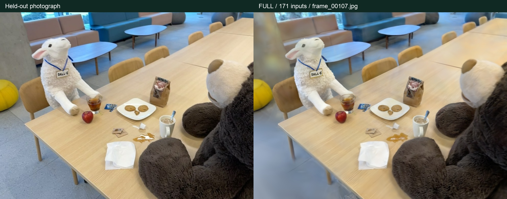
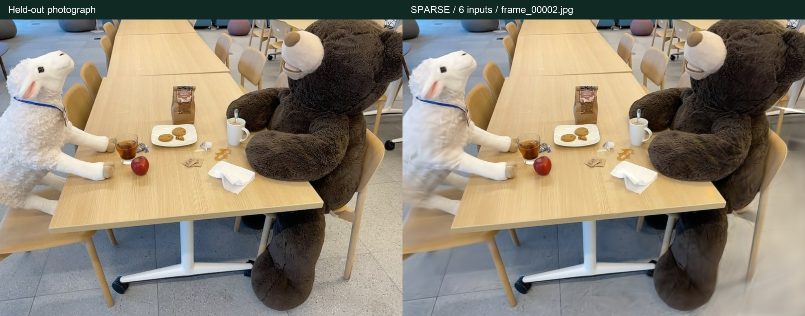
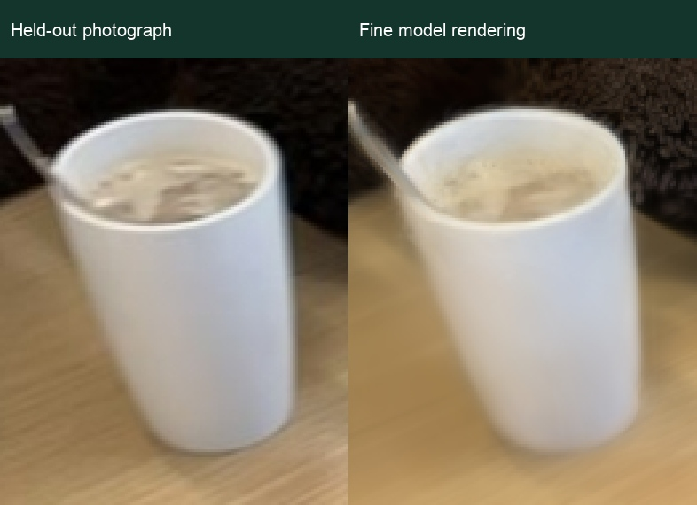
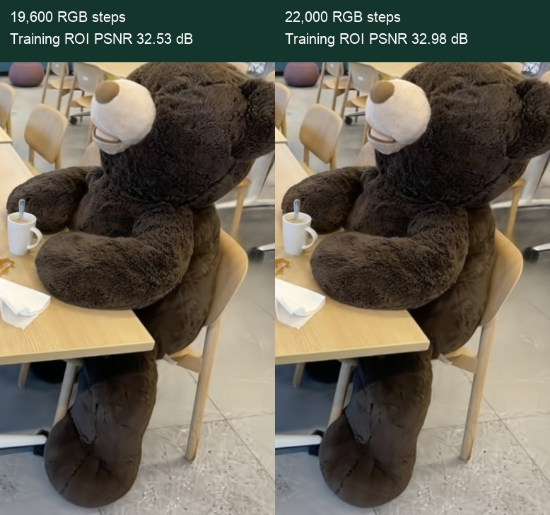
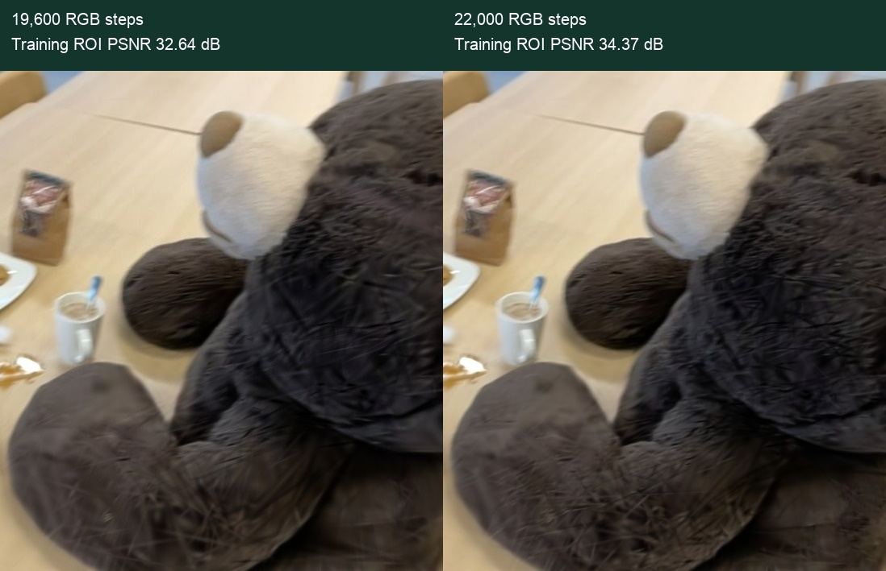
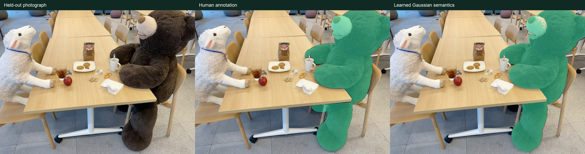
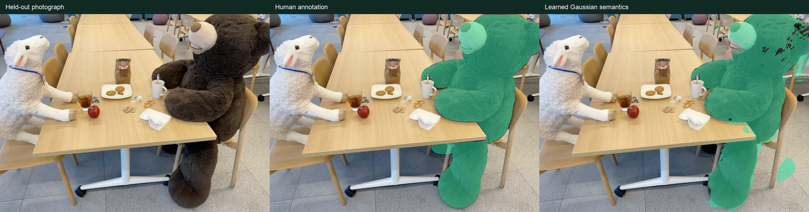

FINE MODE · A100 · HELD-OUT EVALUATION
让重建效果，有实测依据
Reconstruction, backed by measurement.
同一场景，两种输入密度。完整视角与六视角稀疏重建均使用精细模式，并以未参与训练的照片与人工语义标注评测。
One scene, two input densities. Full-input and six-view sparse reconstruction both use Fine mode, evaluated against photographs and human semantic masks excluded from training.
整体重建 · 171 视角Overall rendering · 171 views26.08 dBPSNR · SSIM 0.867
独立测试视角的平均结果Mean across registered held-out views
重点物品 · 咖啡杯Priority detail · coffee mug0.921SSIM · 5 evaluated views
预先指定的重点类别中，平均区域 SSIM 最佳的一类Best mean ROI SSIM among the predeclared priority categories
分割亮点 · 小熊玩偶Segmentation highlight · stuffed bear94.2%IoU · 171 inputs · 5 evaluated views
多视角类别汇总，不是最佳单帧Class score pooled over views, not the best single frame
整体、重点区域与分割，完整对照
Overall, priority and segmentation scores
| 指标Metric | 171 视角views | 6 视角views |
|---|
| 整体 PSNR ↑Overall PSNR ↑ | 26.08 dB | 22.61 dB |
|---|
| 整体 SSIM ↑Overall SSIM ↑ | 0.867 | 0.711 |
|---|
| 重点区域 PSNR ↑Priority ROI PSNR ↑ | 27.99 dB | 23.03 dB |
|---|
| 重点区域 SSIM ↑Priority ROI SSIM ↑ | 0.779 | 0.594 |
|---|
| 分割 mIoU ↑Segmentation mIoU ↑ | 41.2% | 21.4% |
|---|
| 边界 IoU ↑Boundary IoU ↑ | 11.5% | 3.6% |
|---|
| 成功注册的测试视角Registered test views | 6 / 6 | 2 / 6 |
|---|
PSNR／SSIM 衡量渲染图像质量。本数据集没有用于本次实验的三维表面真值，因此这些结果不代表毫米级几何精度。重点区域指标是绝对质量，未执行同配置的无重点对照，不声称因果增益。PSNR/SSIM measure rendered image quality. No 3D surface ground truth is used in this experiment, so these are not millimeter-level geometry measurements. Priority ROI scores are absolute quality; without a matched no-priority ablation, they do not establish a causal gain.
相同测试照片上的对比
Compare the same test photographs
各组全量结果按各自成功注册的测试照片统计；测试数量不同，不应直接据此推断哪组更好。下面另列两组共同视角的同范围比较。
Each run’s aggregate uses its successfully registered test photographs. With different test counts, those aggregates alone do not establish which run is better. A comparison over their shared test photographs follows.
两组共同注册成功 2 个测试视角：frame_00002.jpg, frame_00107.jpg
2 test views register successfully in both runs: frame_00002.jpg, frame_00107.jpg
| 共同视角指标Common-view metric | 171 inputs | 6 inputs |
|---|
| 整体 PSNR ↑Overall PSNR ↑ | 28.51 dB | 22.61 dB |
|---|
| 整体 SSIM ↑Overall SSIM ↑ | 0.879 | 0.711 |
|---|
| 重点区域 PSNR ↑Priority ROI PSNR ↑ | 30.56 dB | 23.03 dB |
|---|
| 重点区域 SSIM ↑Priority ROI SSIM ↑ | 0.819 | 0.594 |
|---|
| 分割 mIoU ↑Segmentation mIoU ↑ | 42.7% | 21.4% |
|---|
| 边界 IoU ↑Boundary IoU ↑ | 13.2% | 3.6% |
|---|
Common-view metrics JSON
| 输入组Input group | 未通过的测试视角Test view not accepted | 注册原因Registration reason |
|---|
| 6 | frame_00025.jpg | 有效内点 28 个，要求至少 30 个28 inliers; at least 30 required |
| 6 | frame_00043.jpg | 有效内点 15 个，要求至少 30 个15 inliers; at least 30 required |
| 6 | frame_00129.jpg | 匹配到的独立三维点不足 30 个Fewer than 30 distinct matched 3D points |
| 6 | frame_00140.jpg | 有效内点 14 个，要求至少 30 个；图像覆盖 1.0%，要求至少 3%14 inliers; at least 30 required; 1.0% image coverage; at least 3% required |
独立照片上的实际渲染
Actual renderings from held-out cameras

171 张输入；代表视角 frame_00107.jpg，按测试 PSNR 中位位置选择。171 input photos; representative view frame_00107.jpg, selected at the median test PSNR rank.
6 张输入；代表视角 frame_00002.jpg，按测试 PSNR 中位位置选择。6 input photos; representative view frame_00002.jpg, selected at the median test PSNR rank.重要物品的独立测试细节
Priority-object detail on held-out photographs

coffee mug · 5 个标注测试视角平均区域 SSIM 0.921。图中为 frame_00043.jpg 的三倍像素放大，按该类别区域 SSIM 中位位置选择。coffee mug · mean ROI SSIM 0.921 over 5 annotated test views. The 3× pixel enlargement uses frame_00043.jpg, selected at this category’s median ROI-SSIM rank.重要物品细化：真实训练阶段对照
Priority refinement: actual training-stage comparisons

171 张输入 · 训练视角 0170.jpg · 细化阶段前后。按三个留存示例的 PSNR 变化中位位置选择；该图用于展示训练过程。171 inputs · training view 0170.jpg · before and after refinement. Selected at the median PSNR-change rank among the three saved examples; this panel illustrates the training process.
6 张输入 · 训练视角 0002.jpg · 细化阶段前后。按三个留存示例的 PSNR 变化中位位置选择；该图用于展示训练过程。6 inputs · training view 0002.jpg · before and after refinement. Selected at the median PSNR-change rank among the three saved examples; this panel illustrates the training process.这些前后对照来自相同训练相机，说明细化阶段确实执行。上方的重点区域精度使用独立测试照片；训练前后差异不能单独证明优于同样增加训练步数的普通模型。These before/after comparisons use the same training cameras and document the executed refinement stage. Priority ROI scores above use held-out photographs; a training-stage change alone does not establish an advantage over an ordinary model trained for the same additional steps.
全部类别，一并报告
Every category, reported together

171 张输入 · stuffed bear · 跨视角汇总 IoU 94.2%。画面为该类别测试 IoU 中位位置的视角。171 inputs · stuffed bear · pooled IoU 94.2%. The view is selected at this category’s median test IoU rank.
6 张输入 · stuffed bear · 跨视角汇总 IoU 75.1%。画面为该类别测试 IoU 中位位置的视角。6 inputs · stuffed bear · pooled IoU 75.1%. The view is selected at this category’s median test IoU rank.| 类别Class | 171 视角 IoUviews IoU | 6 视角 IoUviews IoU |
|---|
| 苹果apple | 42.0% | 7.0% |
|---|
| 饼干袋bag of cookies | 63.7% | 31.4% |
|---|
| 小熊鼻部bear nose | 61.6% | 0.0% |
|---|
| 咖啡coffee | 11.4% | 0.0% |
|---|
| 咖啡杯coffee mug | 50.3% | 51.5% |
|---|
| 品牌标签dall-e brand | 19.3% | 9.3% |
|---|
| 蹄部hooves | 31.3% | — |
|---|
| 纸巾paper napkin | 20.6% | 28.3% |
|---|
| 餐盘plate | 83.8% | 40.5% |
|---|
| 羊玩偶sheep | 0.0% | 0.0% |
|---|
| 小熊玩偶stuffed bear | 94.2% | 75.1% |
|---|
| 玻璃杯中的茶tea in a glass | 34.9% | 0.0% |
|---|
| 三块饼干three cookies | 4.0% | 14.0% |
|---|
| 黄色坐墩yellow pouf | 59.9% | — |
|---|
类别 IoU 先累加该类别各标注视角的交并像素，再计算比值；mIoU 对类别等权平均。未预测出的类别保留零分。语义使用保存的原始学习概率，同类区域取最大值，再以完整高斯云进行透明度渲染，阈值固定为 0.5。Per-class IoU pools intersection and union pixels across annotated views; mIoU weights classes equally. Missing predictions remain zero. Scores use saved raw learned probabilities, max-union across same-label regions, full-cloud alpha rendering and a fixed 0.5 threshold.
可复核的实验范围
An auditable experiment
训练仅输入 171 张或 6 张照片，不输入作者的全场景相机与点云。六张测试照片通过 SIFT/PnP 注册到已经固定的训练几何；测试像素不更新模型。相机注册失败会单独列出。精细模式为 22,000 步 RGB；语义基础预算为 2,400 步，并至少覆盖所有有效监督对三轮，实际步数以记录为准。
Training receives only the 171 or six input photos, without the authors’ full-scene cameras or point cloud. Six held-out photos are registered by SIFT/PnP to frozen training geometry; test pixels do not update the model. Registration failures are listed separately. Fine mode uses 22,000 RGB steps, a base 2,400 semantic steps and at least three sweeps of all observed supervision pairs; logs record the actual count.
171-view metrics JSON · 6-view metrics JSON · Summary CSV